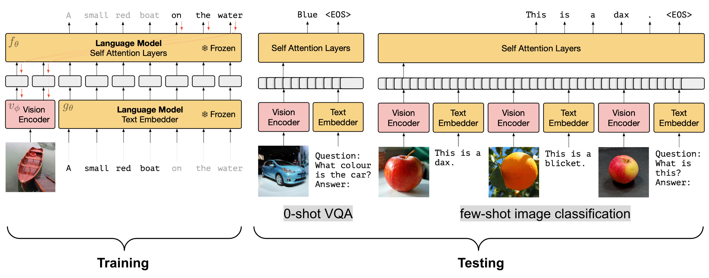
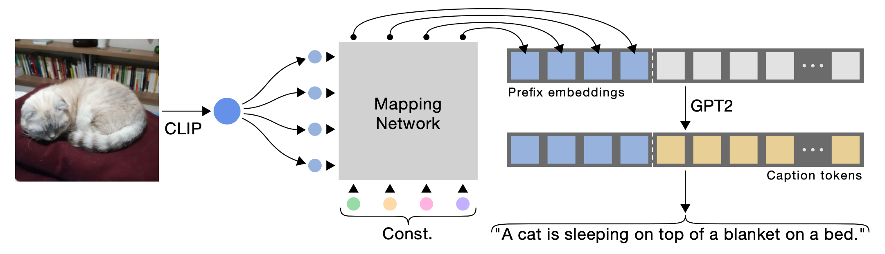
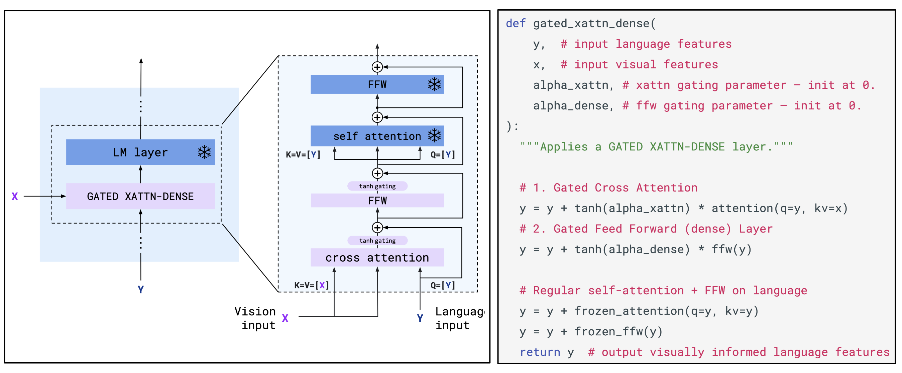
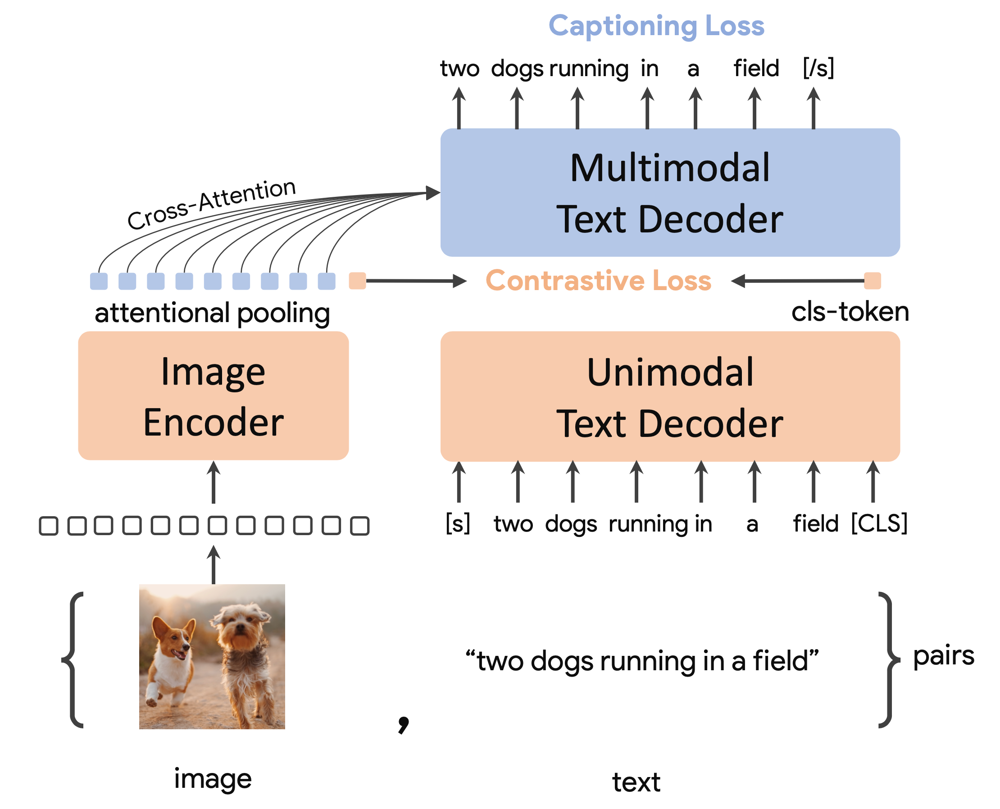
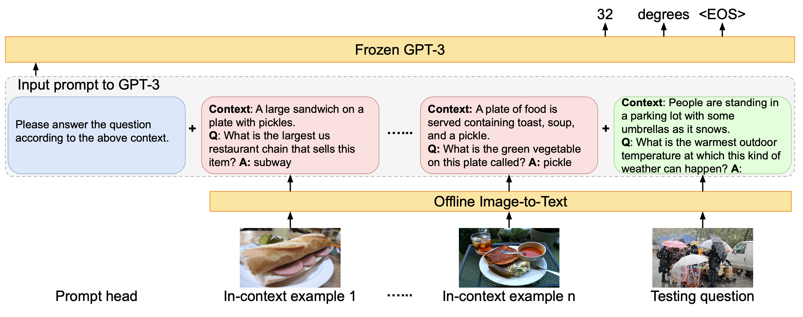
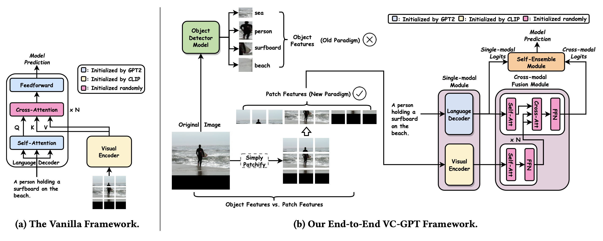

Generalized Visual Language Models
- Why combine vision and language
- Joint image-text pretraining
- Image embeddings as language-model prefixes
- Cross-attention fusion
- Contrastive captioner foundation models
- No-training and tool-composition approaches
- Practical synthesis
1. Why combine vision and language
Visual language models connect perception with language reasoning. The main design problem is how to align image representations with text tokens so that a model can caption, answer visual questions, reason about scenes, and use images as part of a broader interaction loop.
2. Joint image-text pretraining
Early generalized VLMs jointly train on image-text inputs so that visual regions and language tokens share a reasoning space. VisualBERT and SimVLM illustrate the progression from region-text fusion to simpler weakly supervised prefix-language objectives.


3. Image embeddings as language-model prefixes
Another line keeps the language model mostly frozen and learns how to map image features into a prefix or prompt representation. Frozen and ClipCap show how visual encoders can condition a language model without retraining the entire stack.


4. Cross-attention fusion
Cross-attention gives the language model a direct mechanism for attending to visual features while generating text. Flamingo is a representative example: it inserts gated cross-attention layers into a frozen language model and supports few-shot multimodal learning.

5. Contrastive captioner foundation models
CoCa combines contrastive learning and captioning in a unified pretraining recipe. This line makes image-text alignment and generative captioning reinforce each other, supporting both retrieval-like and generation-like tasks.

6. No-training and tool-composition approaches
Some systems avoid training a new multimodal foundation model. PICa uses GPT-3 with carefully constructed visual-question prompts, while Socratic-style systems compose existing vision and language models through language as the interface.


7. Practical synthesis
Main takeaway: VLM design is mostly about where visual information enters the language model: joint token fusion, learned prefixes, cross-attention, contrastive-captioning pretraining, or tool-like composition.
References
- Li et al. (2019). VisualBERT: A Simple and Performant Baseline for Vision and Language.
- Wang et al. (2022). SimVLM: Simple Visual Language Model Pretraining with Weak Supervision.
- Tsimpoukelli et al. (2021). Multimodal Few-Shot Learning with Frozen Language Models.
- Mokady et al. (2021). ClipCap: CLIP Prefix for Image Captioning.
- Alayrac et al. (2022). Flamingo: a Visual Language Model for Few-Shot Learning.
- Yu and Wang et al. (2022). CoCa: Contrastive Captioners are Image-Text Foundation Models.
- Yang et al. (2021). An Empirical Study of GPT-3 for Few-Shot Knowledge-Based VQA.
- Zeng et al. (2022). Socratic Models: Composing Zero-Shot Multimodal Reasoning with Language.